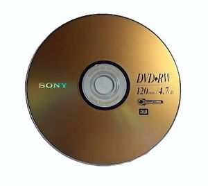
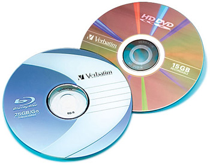

Ο οδήγος DVD είναι απαραίτητο κομμάτι του υπολογιστή. Εφαρμογές,λογισμικό, ταινίες και άλλες πληροφορίες παρέχονται μέσω των οπτικών δίσκων- CD και DVD.
Τι είναι όμως τα DVD/CD drivers;
Τα DVD/CD drivers χρησιμοποιούνται για να διαβάσουν δεδομένα και εφαρμογές από τα CD's (compact disk) και DVDs (digital versatile disk). Είναι μια συσκευή που χρησιμοποιεί τεχνολογία λέιζερ
για να διαβάσει και να γράψει δεδομένα πάνω στους οπτικούς δίσκους ή και από τους οπτικούς δίσκους.
Τα δεδομένα είναι γραμμένα στον οπτικό δίσκο με καύση κοιλωμάτων στο δίσκο με λέιζερ. Μετά, τα δεδομένα μπορούν να διαβαστούν
αντανακλώντας λέιζερ χαμηλής ισχύος στην επιφάνεια του δίσκου. Ο photo detector στη συνέχεια μεταφράζει τα φώτα που αναβοσβήνουν πίσω σε ήχο ή δεδομένα.
Όπως υποδηλώνει το όνομα , CD-ROM (compact disk read only memory) οι οδηγοί είναι μόνο για διάβασμα δεδομένων από τον δίσκο , δεν μπορούν να γράφτουν.(που σημαίνει ότι
ότι δεν γίνεται να γραφτούν άλλα δεδομένα στον συγκεκριμένο δίσκο).
Προς το παρόν, αυτός ο τύπος οδηγού σταδιακά κατεργείται αφού έχει αντικατασταθεί από πιο προηγμένες και πρόσθετες δυνατότητες των DVD drivers. Όλοι οι επιτραπέζιοι υπολογιστές
έχουν τουλάχιστον CD-ROM drivers, αν και αλλάζει αυτό τώρα.
Σύντομα, το επανεγγράψιμο DVD γίνεται ένα πρότυπο στους περισσότερους καινούργιους επιτραπέζιους και φορητούς υπολογιστές. Έτσι, βεβαιώσου οτι υπάρχει πριν αγοράσεις ένα νέο υπολογιστή.
Χρησιμοποιώντας αυτόν τον οδηγό μπορείς να διαβάσεις/γράψεις και τα δυο CD και DVD δίσκους. Οι DVD drivers μπορούν να διαβάσουν όλους τους τύπους CD's όμως οι CD drivers δεν είναι σε θέση να διαβάσουν
DVD.
H χρήση των CD's και DVD's
Πλήθος πληροφοριών μπορούν να καταγραφούν με την χρήση των οπτικών δίσκων. Άν είσαι ένας χρήστης υπολογιστή για να δημιουργήσεις αντίγραφα ασφαλείας ή κάνεις ανάπτυξη εφαρμογών για να καταγράψεις
το λογισμικό ή είσαι σε βιομηχανία ψυχαγωγίας(ταινίες) , CD/DVDs είναι απλά μέσα για να μοιραστείς οποιαδήποτε πληροφορία εύκολα.
Αυτοί οι οπτικοί δίσκοι είναι προτιμότεροι για τους παρακάτω λόγους:
1)Είναι φτηνοί
2)Αποθηκεύουν μεγάλο όγκο δεδομένων
3)Εύκολοι στον χειρισμό
4)Μακροζωία
Διαφορές ανάμεσα στα CD's και DVD's
Και οι δυο τύποι είναι φτιαγμένοι από το ίδιο υλικό και μέγεθος , αλλά διαφέρουν στην
αποθηκευτική χωρητικότητα και ανθεκτικότητα.
Τα CD's μπορούν να αποθηκεύσουν γυρώ στα 700MB μέγεθος δεδομένων. Τα τυπικά DVD's αποθηκεύουν 4,7GB , περισσότερο από ότι 6 απλά CD's των δεδομένων. Επιπλέον, οι δίσκοι DVD έχουν
περισσοτερη διάρκεια από τα CD.
Σήμερα, η εταιρεία ανάπτυξης εφαρμογών και η βιομηχανία διασκεδάσεων χρησιμοποιούν DVD για να πουλήσουν το προϊόν τους.
Τύποι μορφών CD και DVD
Μέχρι στιγμής, Δυο είδη CD είναι διαθέσιμα άλλα σαν την CD-ROM: CD-R και CD-RW
CD-R (CD-recordable) - μπορεί να γραφτεί μόνο μια φορά.
CD-RW (CD-rewritable) - μπορεί να γραφτεί επανειλημμένα(εννοώντας διαγραφή και ξανά εγγραφή), συνήθως χρησιμοποιείται για αντίγραφα ασφαλείας.
Αντίστοιχα, δυο είδη DVD υπάρχουν και είναι διαθέσιμα άλλα σαν την DVD-ROM: DVD-R και DVD-RW
DVD-R and DVD+R - μπορεί να γραφτεί μόνο μια φορά.
DVD-RW, DVD+RW - μπορεί να γραφτεί επανειλημμένα(εννοώντας διαγραφή και ξανά εγγραφή),συνήθως χρησιμοποιείται για αντίγραφα ασφαλείας.

Με βάση το μέγεθος, υπάρχουν 4 τύποι DVD
Single-sided - ένα στρώμα δεδομένων DVD (4,7GB δεδομένα)
Double-sided - δυο στρώματα δεδομένων DVD (9.5GB) εγγραφή και στις 2 πλευρές του δίσκου.
Single-Sided - δυο στρώματα δεδομένων DVD(8.5GB) κάνει εγγραφή στην μια πλευρά αλλά έχει 2 εγγράψιμα στρώματα με την τοποθέτηση του ενός πάνω στην άλλη.
Double-sided - τέσσερα στρώματα δεδομένων DVD (17GB) κάνει εγγραφή και στις 2 πλευρές του δίσκου.Και οι 2 πλευρές περιέχουν 2 εγγράψιμα στρώματα δεδομένων.
Τύποι CD και DVD drivers
CD-ROM drives - διαβάζει μόνο CD.
DVD-ROM drives - σημαίνει να διαβάζει CD και DVD. Επίσης εγκαθιστά αρχεία στα CD's αλλά όχι στα DVDs.
DVD-RW writers - Ολοκληρώνει όλες της διεγρασίες ανάγνωσης και εγγραφής και στους δύο τύπους δίσκων.
HD-DVD και BLU-RAY
Αυτοί είναι 2 μορφές δίσκων υψηλής ευκρίνειας. Η HD-DVD αναπτύχθηκε από την Toshiba και οι άλλες μορφές δίσκων, Η Blu-ray αναπτύχθηκε από την Sony.
Πρόσφατα, υπήρχε ανταγωνισμός ανάμεσα στις 2 μορφές λόγω του μεγέθους και της αντοχής . Η Blu-ray υπερείχε της HD-DVD και επιλέχθηκε από τις βιομηχανίες ψυχαγωγίας.
Για παράδειγμα,σε ενός στρώματος δίσκο HD DVD μπορούν να αποθηκευτούν 14.7GB δεδομένα ένω σε έναν αντίστοιχο δίσκο Blu-ray μπορούν να αποθηκευτούν περίπου 25GB δεδομένα.

Επίλογος
Έχοντας έναν DVD writer θα είναι η καλύτερη επιλογή αφού μπορεί να φέρει εις πέρας οποιαδήποτε από τις διεργασίες (ανάγνωση και καύση) Ωστόσο, είναι σοφή
επιλογή να έχει ξεχωριστό DVD driver και καύστη στον υπολογιστή σου, ειδικά αν βλέπεις συχνά ταινίες στον υπολογιστή.Θα αυξηθεί και η λειτουργία του καυστήρα.